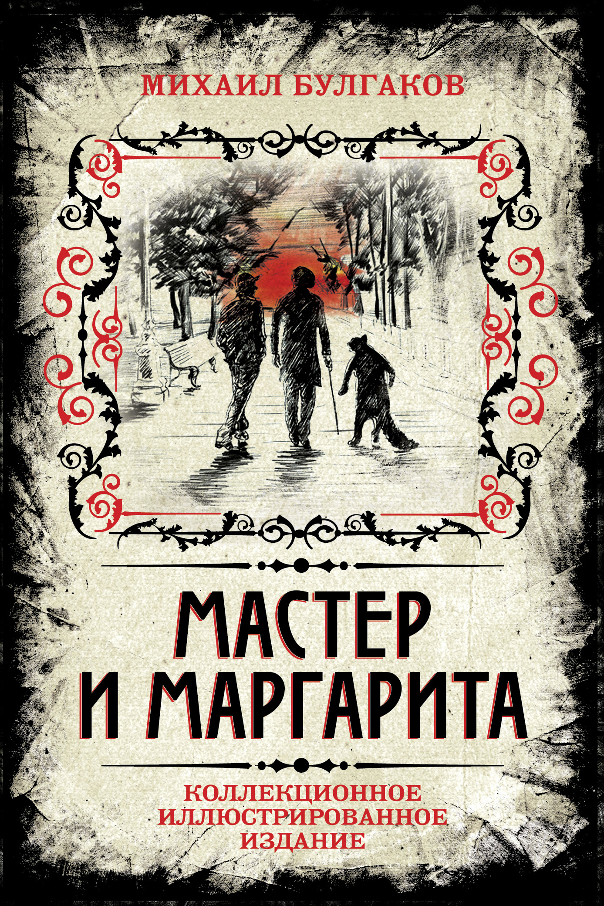

Главная
топ 10 русской классики
о книге

Автор: Михаил Булгаков
Описание: Главный герой этого культового романа – Мастер, который попал в психиатрическую больницу из-за травли и ареста после написания романа “Понтий Пилат”. Исчезновение Мастера весьма скорбно восприняла его жена Маргарита. Она готова пойти на любые жертвы ради того, чтобы узнать жив ли ее муж…и даже продать душу дьяволу…